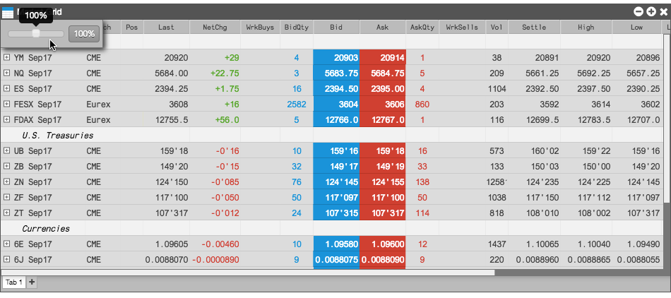
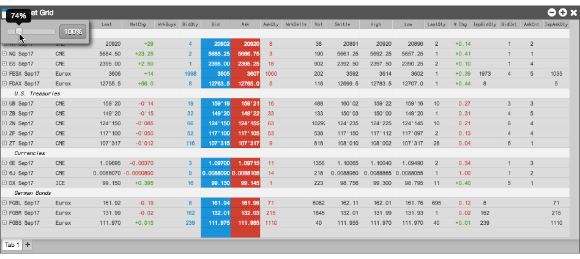
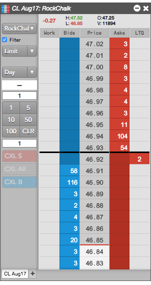
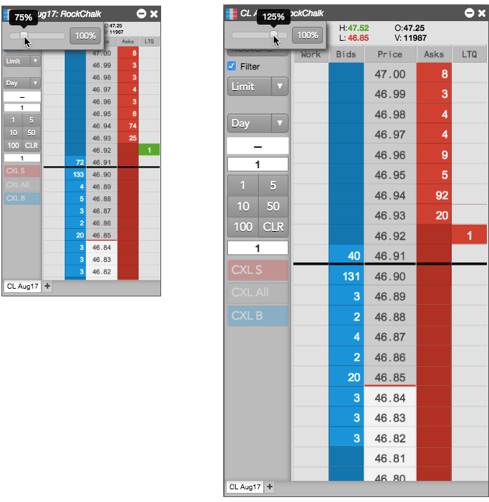

You can zoom a widget between 50% and 150% percent of the default widget view using a slider control. Based on the widget, zooming can either:
To scale the contents of a widget, such as to make more columns visible:
Right-click the widget's title bar to open its Context menu; then select Zoom.
The Zoom slider appears under the title bar.

Drag the slider left until all of the columns are visible. Alternatively, you could drag the slider right to show less of the content at a larger size.

You can click 100% to return to the standard view.
Click anywhere in the widget or workspace to hide the Zoom slider.
To enlarge or reduce the size of a widget:
Right-click the widget's title bar to open its Context menu; then select Zoom.
The Zoom slider appears under the title bar.

Drag the slider left or right to the desired zoom percentage.

You can click 100% to return to the standard view.
Click anywhere in the widget or workspace to hide the Zoom slider.